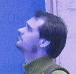

MORFE.jl is built by a small group of researchers across nonlinear dynamics, structural mechanics and scientific computing — joined by a wider circle of collaborators and contributors who shape the method, the code, and the applications it ships with.
Researchers who shaped the theory, applications, and earlier generations of MORFE.

PI · Theory
IMSIA · ENSTA Paris
Long-standing work on nonlinear normal forms, parametrisation methods, and reduction for thin structures. Provides the theoretical backbone of DPIM.
PI · MEMS · Multiphysics
Politecnico di Milano · DICA
Coupling DPIM with the MEMS pipeline at PoliMi: electrostatic, fluid-damping, thermo-elastic. Hosts the application case studies.
Contributor · Rotors
University of Liège · Aerospace & Mechanical Engineering
Application of DPIM to rotating machinery, friction interfaces, mistuned bladed disks. Drives the rotor benchmarks.
Developer · Forcing · MEMS
Politecnico di Milano · MEMS Lab
Time-periodic invariant manifolds and non-autonomous forcing. Drives the MEMS micromirror benchmark and piezoelectric actuator applications.
Developer · Shells · MEMS
Politecnico di Milano · DICA
Geometrically nonlinear shell reduction and MEMS frequency combs. Built multiphysics shell benchmarks and contributed to MORFE2.0.
MORFE.jl is open source. Contributions of code, tutorials, benchmarks and applications are all welcome. If you're using DPIM in your research and would like to collaborate, get in touch.